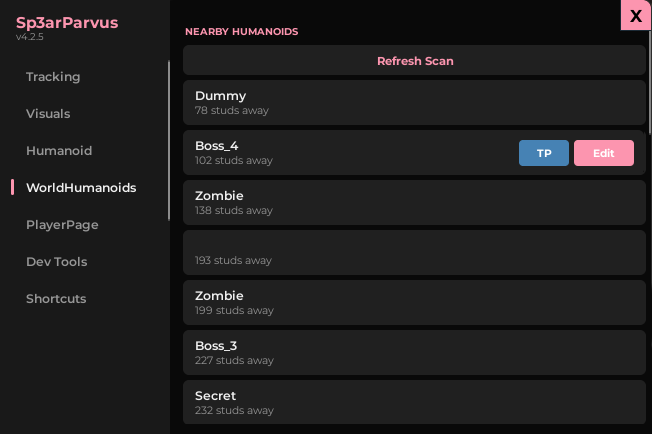
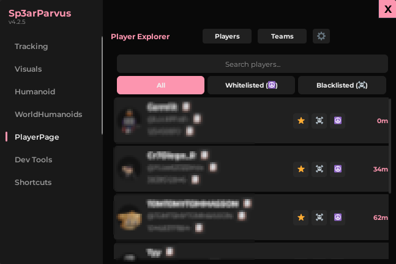
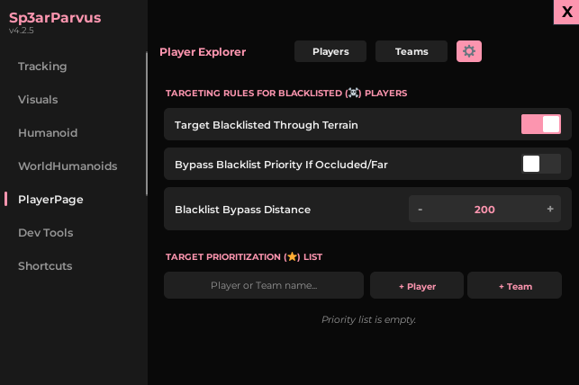
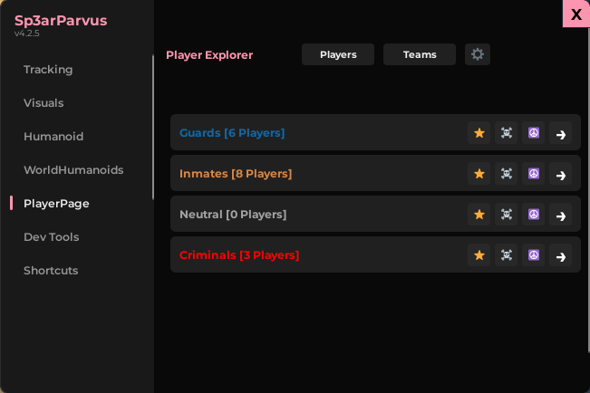
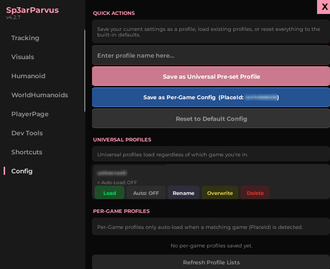
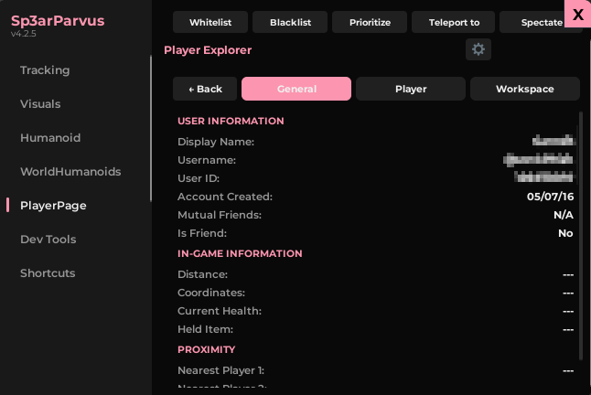
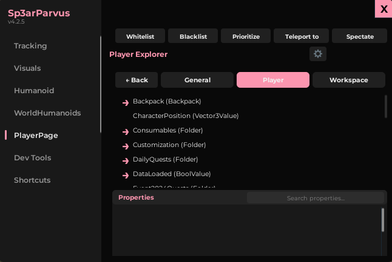
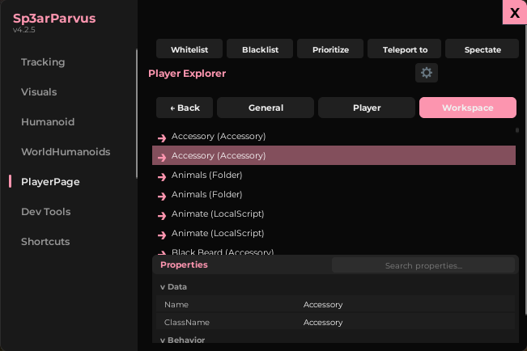

UI SHOWCASE
Live Demo
Clean interface with instant toggles, numeric controls, and a tab-driven workspace explorer.
Sp3arParvus
SAFE_MODE flag available at the top of the script. Set to true to disable high-risk features during routine testing.
Attraction Strength
Numeric control for how strongly the camera is pulled toward targets.
FOV Radius
Sets the field-of-view cone used for target detection.
Visibility Check
Raycast-based LOS validation before locking onto targets.

Distance Colors
Pink → Red → Yellow → Green proximity-based color coding.
Health HUD
Real-time health bars and numerical display on player nametags.
Gh0st Mode
Cleans obstructive UI for a distraction-free debug session.

WalkSpeed Override
Instantly set LocalPlayer movement speed for edge-case testing.
JumpPower
Modify jump force to validate platforming mechanics.
MaxSlopeAngle
Test terrain traversal limits and climbable surface thresholds.

NPC Properties
Edit any non-local Humanoid's stats in real-time.
AI Behavior Test
Validate AI pathfinding and response under different conditions.
Replication Check
Observe how changes replicate to other connected clients.



Data Explorer
Deep-dive into any player's replicated data and instance properties.
Whitelist / Blacklist
Manage player-specific rules for moderation and replication testing.
Spectate Mode
Lock camera to any player to observe their experience directly.

Br3ak3r
Isolate map geometry, remove obstacles, debug collision layers.
H1ghL1ghter
Highlight parts and retrieve their full workspace paths instantly.
D3v Tool HUD
Real-time World Time, LPC, and Mouse Coordinates overlay.

Universal & Per-Game Profiles
Save your settings universally across all games, or tie a specific configuration directly to a Roblox PlaceId.
Auto-Load System
Toggle "Auto-Load" on any profile. Sp3arParvus will automatically detect your current game and load the appropriate configuration upon execution.
PlayerPage — Data Explorer Views


